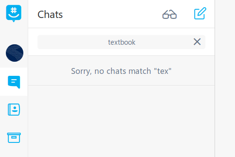

Created by Joshua Nelson using reveal.js
i = 1
d = 1.2
s = "hello, world"
l = [1, 2, 3]
int i = 1;
double d = 1.2;
String s = "hello, world";
int[] i = {1, 2, 3};
l = [1, 1.2, "hello, world"]
List<Object> l = Arrays.asList(1, 1.2, "hello, world");
What's the difference?
d = {0: 'a', 1: 'b', 2: 'c'}
a = ['a', 'b', 'c']
print(d[0]) # prints 'a'
print(a[0]) # prints 'a'
Keys don't have to be integers
d = {'Monday': 'MATH 374', 'Tuesday': 'CSCE 146'}
print(d['Monday']) # prints 'MATH 374'
GroupMe doesn’t have a working search and it made me sad. So I wrote my own in Python!
Yes, I absolutely used this talk to advertise on of my side projects.
What's this do?
def f(**kwargs):
for key, value in kwargs.items():
print(key, value)
f(a='b', c='d') # prints 'a b\nc d'
Compares code in Python to code that does the same thing in Java
print("Hello, world!")
System.out.println("Hello, world!");
for i in [1, 2, 3]:
print(i)
for (int i : Arrays.asList(1, 2, 3)) {
System.out.println(i);
}
Python doesn't have generics, or rather, everything is generic! It uses duck-typing instead.
def makeList(element):
return [element]
<T> List<T> makeList(T element) {
ArrayList<T> myList = new ArrayList<T>();
myList.add(element);
return myList;
}
"""
This documents the function 'my_function'
Longer descriptions go here, in plain text
"""
def my_function():
return 4 # guaranteed by IEEE to be random
/**
* This documents the function 'my_function'
*
* Longer descriptions go here, in HTML markup
* @return A random integer between 0 and 1000
*/
int my_function() {
return 4;
}
def print(*args):
for arg in args:
print(arg)
void print(Object ... args) {
for (Object arg : args) {
System.out.println(arg);
}
}
def call_with_one(f):
return f(1)
call_with_one(lambda arg: print(arg))
void call_with_one(IntConsumer f) {
f.accept(1);
}
call_with_one(i -> System.out.println(i));